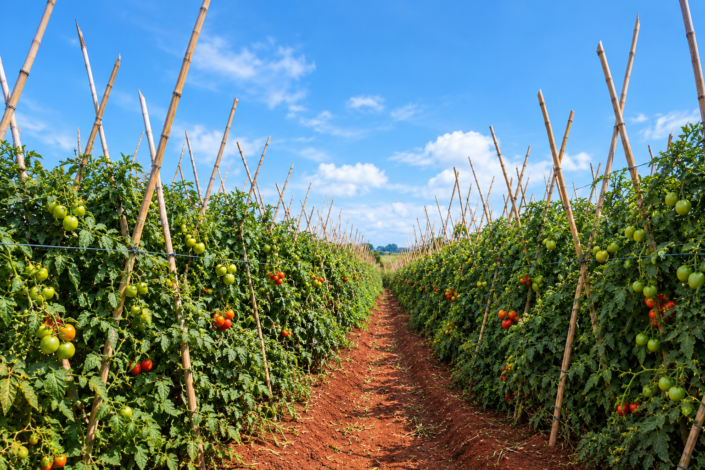

SANTA LUZIA CENTRAL
🍅 Colheita de Tomates
← Central
Tempo
30s
Colhidos
0 / 12
Pontos
0
STACOIN
+0

🍅 Toque nos tomates maduros!
Colha o máximo que conseguir antes do tempo acabar.
⏸ Pausar
🌱 Colheita encerrada!
🍅 Jogar novamente
← Voltar para Central
🪙 STACOIN está em modo de teste. Nenhum saldo real é alterado nesta versão.